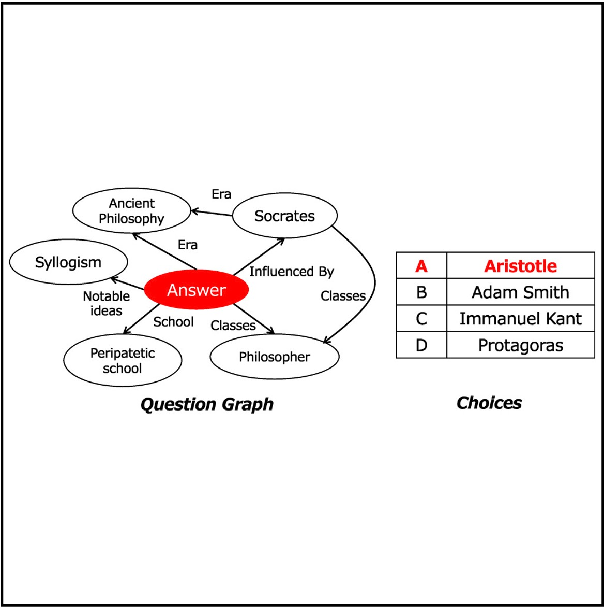
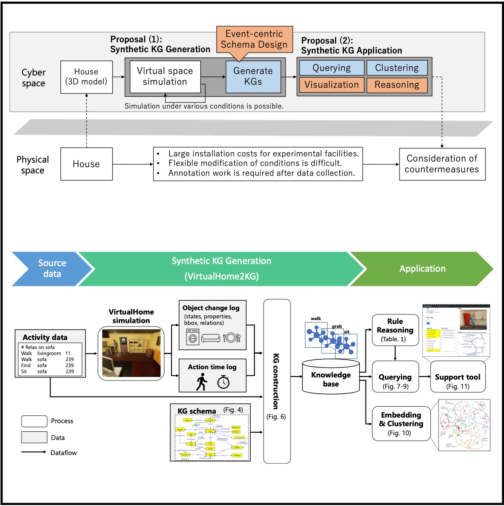
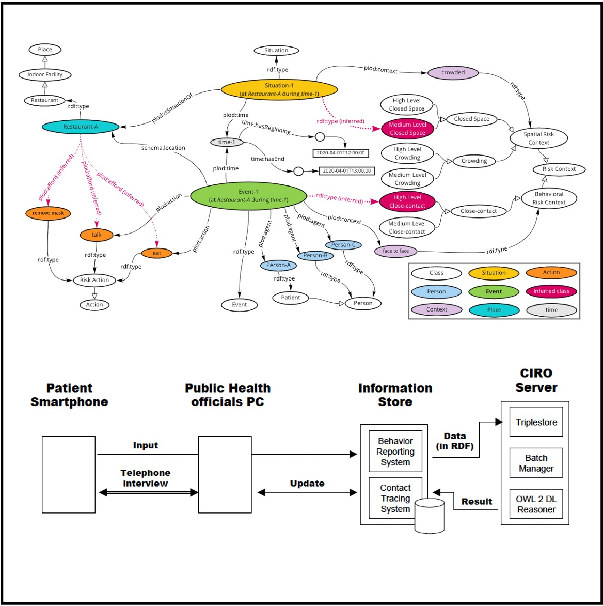
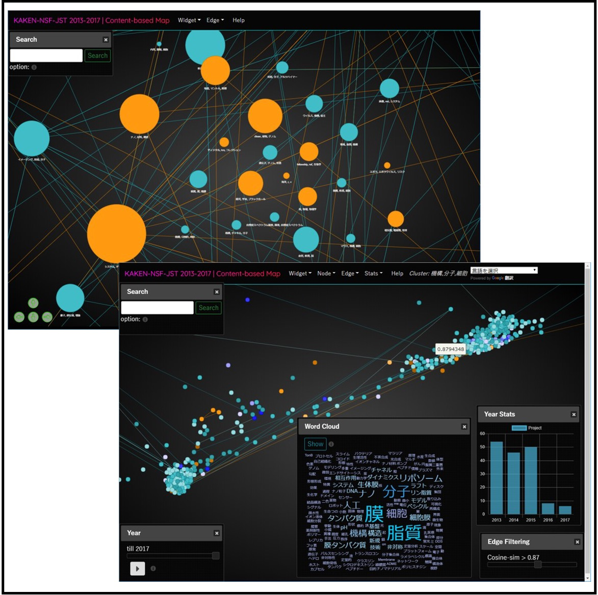
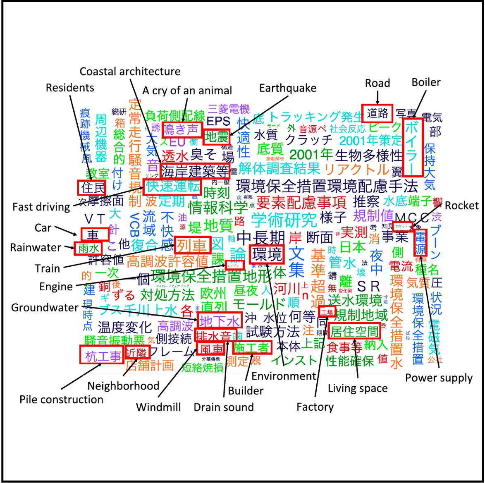
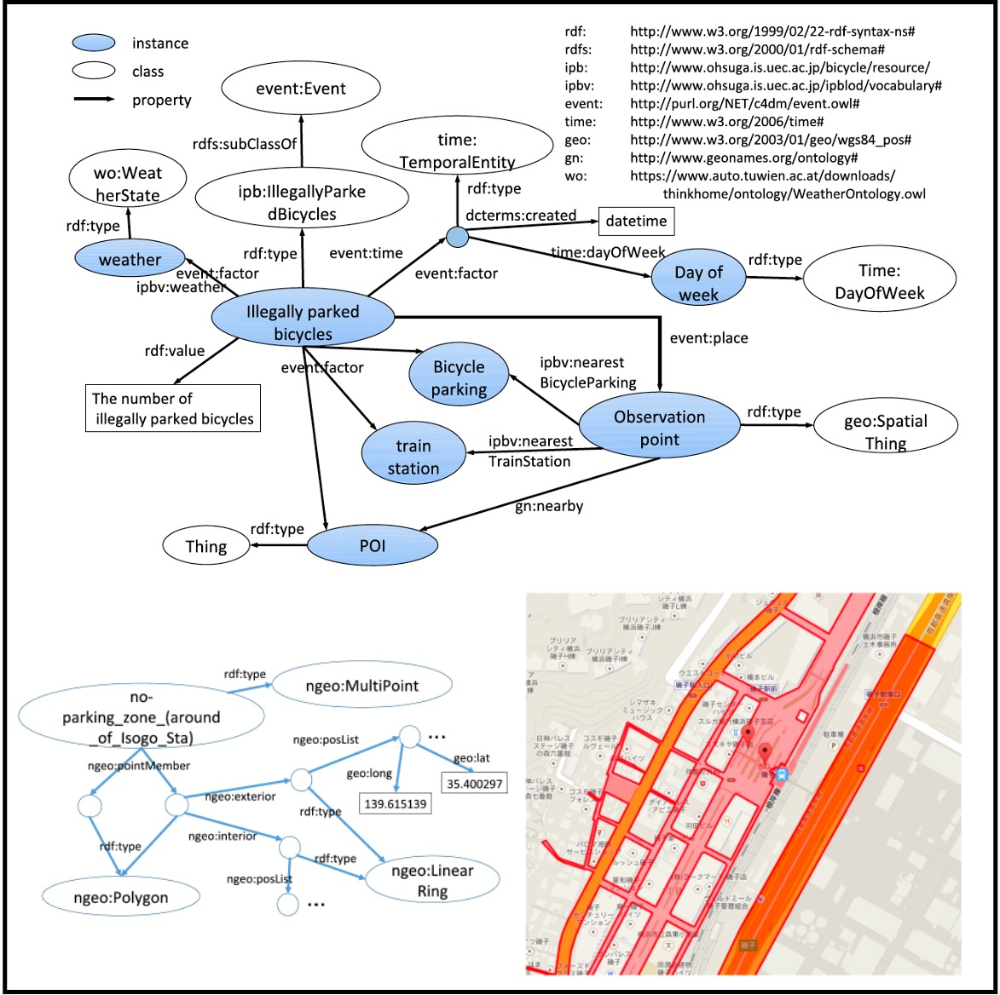

I am a senior researcher at Artificial Intelligence Research Center (AIRC), National Institute of Advanced Industrial Science and Technology (AIST), Japan, where I work on knowledge graph and semantic technology. I am also a collaborative associate professor at The University of Electro-Communications (UEC) ( Ohsuga, Tahara, & Sei Lab). I am also a part-time lecturer at Hosei University, where I teach semantic web (spring semester) and agent technology (fall semester).
I did my PhD at UEC, where I was advised by Takahiro Kawamura and Akihiko Ohsuga and funded by the JSPS DC2.


Research
I'm interested in semantic web, ontology, graph representation learning, and open data. Much of my research is about constructing and reasoning knowledge graphs from physical and cyber worlds (unstructured text, semistructured data, video, virtual space, etc.).
Peer-reviewed Journal Papers
|

|
18.
Fumika Okuhara, Shusaku Egami, Yuichi Sei, Yasuyuki Tahara, Akihiko Ohsuga Transactions of the Japanese Society for Artificial Intelligence, Vol.40, No.1, pp.B-O71_1-16, 2025 (in Japanese) DOI: https://doi.org/10.1527/tjsai.40-1_B-O71 We proposed a method to automatically generate panoramic learning questions for higher education using knowledge graphs and inference rules. |

|
17.
Yuki Saito, Shusaku Egami, Yuichi Sei, Yasuyuki Tahara, Akihiko Ohsuga Transactions of the Japanese Society for Artificial Intelligence, Vol.39, No.6, pp.AG24-D_1-13, 2024 (in Japanese) DOI: https://doi.org/10.1527/tjsai.39-6_AG24-D This study investigated effective knowledge representation for anime recommendations using graph neural networks, demonstrating that combining metadata-based and text-based knowledge graphs significantly improves recommendation performance. |
|
|
16.
Yuki Sawamura, Takeshi Morita, Shusaku Egami, Takanori Ugai, Ken Fukuda Transactions of the Japanese Society for Artificial Intelligence, Vol.39, No.6, pp.C-O42_1-14, 2024 (in Japanese) DOI: hhttps://doi.org/10.1527/tjsai.39-6_C-O42 This study proposed a Japanese Entity Linking model using a Pointer Network and confirmed it outperformed existing multilingual models in evaluation experiments. |

|
15.
Swe Nwe Nwe Htun, Shusaku Egami, Ken Fukuda SICE Journal of Control, Measurement, and System Integration, Vol.17, No.1, pp.87-105, 2024 DOI: https://doi.org/10.1080/18824889.2024.2318848 This study investigates the potential of generating synthetic training data for activities of daily living (ADLs) recognition using the VirtualHome2KG framework. |

|
14.
Shusaku Egami, Takanori Ugai, Masateru Oota, Kyoumoto Matsushita, Takahiro Kawamura, Kouji Kozaki, Ken Fukuda IEEE Access, Vol.11, pp.142030-142042, 2023 Code1 / Code2 / Dataset / DOI: https://doi.org/10.1109/ACCESS.2023.3341029 (open access) This study introduces RDF-star2Vec, a novel KGE model designed for RDF-star graphs, which are (recursive) hyper-relational knowledge graphs. In addition, we provide a dataset and a benchmarking framework for data mining tasks focused on complex RDF-star graphs. |
|

|
13.
Shusaku Egami, Takanori Ugai, Mikiko Oono, Koji Kitamura, Ken Fukuda IEEE Access, Vol.11, pp.23857-23873, 2023 Code / Dataset / DOI: https://doi.org/10.1109/ACCESS.2023.3253807 (open access) We proposed the VirtualHome2KG framework to generate synthetic KGs of daily life activities in virtual space. We also demonstrated the utility and potential of the VirtualHome2KG through several use cases, including the analysis of daily activities by querying, embedding, and clustering, and fall risk detection among older adults based on expert knowledge. |
|

|
12.
Shusaku Egami, Yasunori Yamamoto, Ikki Ohmukai, Takashi Okumura PLOS ONE, Vol.18, No.3: e0282291, 2023 data / project page / DOI: https://doi.org/10.1371/journal.pone.0282291 (open access) We constructed an ontology, CIRO, which can infer the risk of COVID-19 infection from the action history for the actual operation of tracking and screening of close contacts at public health centers. |

|
11.
Shusaku Egami, Takahiro Kawamura, Kouji Kozaki, Akihiko Ohsuga Data Intelligence, Vol.4, No.1, pp.88-111, 2022 DOI: https://doi.org/10.1162/dint_a_00113 (open access) We extracted urban problem causality from various documents and structured the data as a KG. Then we detected vicious cycles and root problems using SPARQL and SWRL. Furthermore, urban-problem experts evaluated the extracted causal relations. |

|
10.
Yuto Tsukagoshi, Shusaku Egami, Yuichi Sei, Yasuyuki Tahara, Akihiko Ohsuga IEEJ Transactions on Electronics, Information and Systems, Vol.141, No.11, pp.1222-1233, 2021 (in Japanese) DOI: https://doi.org/10.1541/ieejeiss.141.1222 We collected unstructured data from a university campus and integrated it as a knowledge graph based on the proposed ontology. |

|
9.
Shusaku Egami, Xiaodong Lu, Tadashi Koga, Yasuto Sumiya Transactions of the Japanese Society for Artificial Intelligence, Vol.36, No.1, pp.WI2-F_1-12, 2021.1 (in Japanese) project page / DOI: https://doi.org/10.1527/tjsai.36-1_WI2-F (open access) We developed a reference ontology that enables common situational awareness of spatiotemporal concepts for semantic interoperability in air traffic information management. |
|

|
8.
Takahiro Kawamura, Shusaku Egami IEEE Transactions on Engineering Management, Vol.68, No.5, 2021 project page / DOI: https://doi.org/10.1109/TEM.2019.2946886 (open access) We proposed a method for creating word and paragraph vectors corresponding to bilingual textual information in the same multidimensional space, aiming to construct a bilingual map of science. |
|

|
7.
Shusaku Egami, Takahiro Kawamura, Kouji Kozaki, Akihiko Ohsuga International Journal of Smart Computing and Artificial Intelligence, Vol.3, No.1, pp.71-86, 2019 DOI: https://doi.org/10.52731/ijscai.v3.i1.321 (open access) We extracted causal relations using natural language processing and crowdsourcing to construct urban problem Linked Data. |

|
6.
Takahiro Kawamura, Katsutaro Watanabe, Naoya Matsumoto, Shusaku Egami, Mari Jibu Scientometrics, Vol.116, pp.941-958, 2022 project page / DOI: https://doi.org/10.1007/s11192-018-2783-x (open access) We proposed a new content-based method of locating research projects in a multi-dimensional space using the word/paragraph embedding techniques. |

|
5.
Shusaku Egami, Takahiro Kawamura, Akihiko Ohsuga IEICE Transactions on Information and Systems, Vol.E101-D, No.1, pp.116-129, 2018 DOI: https://doi.org/10.1587/transinf.2017SWP0010 (open access) We complemented temporal and spatial missing data of the Linked Open Data (LOD) of the problem of illegally parked bicycles using bayesian networks and computational fluid dynamics. |
|

|
4.
Shusaku Egami, Takahiro Kawamura, Akihiko Ohsuga International Journal of Smart Computing and Artificial Intelligence, Vol.1, No.2, pp.77-93, 2017 DOI: https://doi.org/10.52731/ijscai.v1.i2.99 (open access) We proposed a schema of illegally parked bicycle LOD (IPBLOD) and a methodology of designing LOD schema. |

|
3.
Shusaku Egami, Takahiro Kawamura, Akihiko Ohsuga Transactions of the Japanese Society for Artificial Intelligence, Vol.31, No.6, pp.AI30-K_1-12, 2016 (in Japanese) DOI: https://doi.org/10.1527/tjsai.AI30-K (open access) We purposed eco-cycle for solving illegally parked bicycles using linked open data. |

|
2.
Shusaku Egami, Takahiro Kawamura, Yuichi Sei, Yasuyuki Tahara, Akihiko Ohsuga Transactions on Large-Scale Data and Knowledge-Centered Systems XXVII, Springer LNCS, Vol.9860, pp.129-141, 2016 DOI: https://doi.org/10.1007/978-3-662-53416-8_8 We built an ecosystem that generates Open Urban Data in Link Data format while complementing missing attribute values. |

|
1.
Shusaku Egami, Takahiro Kawamura, Akihiro Fujii, Akihiko Ohsuga IEICE Transactions on Information and Systems, Vol.J98-D, No.6, pp.992-1004, 2015 (in Japanese) CRES: http://id.nii.ac.jp/1438/00009010/ (open access) DOI: https://doi.org/10.1007/978-3-662-53416-8_8 We constructed a linked open data of industrial parts (screw LOD) to realize a business support agent that applies the screw LOD to the bill of materials (BOM). |
International Conference (Peer-reviewed)
-
Shusaku Egami, Kyoumoto Matsushita, Takanori Ugai, Ken Fukuda:
Comparison of Metadata Representation Models for Knowledge Graph Embeddings , Proceedings of the 7th International Knowledge Graph and Semantic Web Conference (KGSWC2025), to appear, 2025.11 (Best Paper Award) -
Go Sato, Shusaku Egami, Yasuyuki Tahara, Yuichi Sei:
Addressing Prompt Injection via Dataset Augmentation through Iterative Interactions among LLM Agents , International Conference on Advances In Science, Engineering, and Technology (ICSET-2025), to appear, 2025.11 -
Yue Qiu, Yanjun Sun, Takuma Yagi, Shusaku Egami, Natsuki Miyata, Ken Fukuda, Kensho Hara, Ryusuke Sagawa:
VideoSetBench: Identifying and Reasoning Similarities and Differences in Similar Videos , IEEE/CVF International Conference on Computer Vision 2025 (ICCV2025), to appear, 2025.10 (Rank: CORE=A*, Qualis=A1) -
Yue Qiu, Yanjun Sun, Takuma Yagi, Shusaku Egami, Natsuki Miyata, Ken Fukuda, Kensho Hara, Ryusuke Sagawa:
VideoSetBench: Identifying and Reasoning Similarities and Differences in Similar Videos , 2nd Workshop on Emergent Visual Abilities and Limits of Foundation Models (EVAL-FoMo 2) in conjuction with The IEEE/CVF Conference on Computer Vision and Pattern Recognition 2025 (CVPR2025), to appear, 2025.6 -
Jin Aoyama, Sudesna Chakraborty, Takeshi Morita, Shusaku Egami, Takanori Ugai and Ken Fukuda:
Household Task Planning with Multi-Objects State and Relationship using Large Language Models based Preconditions Verification , Proceedings of the 17th International Conference on Agents and Artificial Intelligence (ICAART2025), pp.472-483, 2025.2 (Rank: CORE=B, Qualis=B1) -
Fumika Okuhara, Shusaku Egami, Yuichi Sei, Yasuyuki Tahara, Akihiko Ohsuga:
Automatic Question Generation with Knowledge Graph for Panoramic Learning , Proceedings of the IEEE 21st International Conference on Information Technology Based Higher Education and Training (ITHET2024), pp.1-7, 2024.11 (Rank: Qualis=B2) -
Fumikatsu Anaguchi, Sudesna Chakraborty, Takeshi Morita, Shusaku Egami, Takanori Ugai, Ken Fukuda:
Reasoning and Justification System for Domestic Hazardous Behaviors Based on Knowledge Graph of Daily Activities and Retrieval-Augmented Generation , Proceedings of the Twelfth International Symposium on Computing and Networking (CANDAR2024), 11-20, 2024.11 (Rank: Qualis=B2) -
Fumiya Mitsuji, Sudesna Chakraborty, Takeshi Morita, Shusaku Egami, Takanori Ugai, Ken Fukuda:
Entity Linking for Wikidata using Large Language Models and Wikipedia Links , Proceedings of 2024 Twelfth International Symposium on Computing and Networking Workshops (CANDARW), pp.144-149, 2024.11 -
Shusaku Egami, Takanori Ugai, Ken Fukuda:
Compressing Multi-Modal Temporal Knowledge Graphs of Videos , Proceedings of the ISWC 2024 Posters, Demos and Industry Tracks co-located with 23rd International Semantic Web Conference (ISWC2024), CEUR, Vol.3828, pp.1-6, 2024.11 (Rank: CORE=A, Qualis=A1) -
Shusaku Egami, Takanori Ugai, Swe Nwe Nwe Htun, Ken Fukuda:
VHAKG: A Multi-modal Knowledge Graph Based on Synchronized Multi-view Videos of Daily Activities , Proceedings of the 33rd ACM International Conference on Information and Knowledge Management (CIKM2024), pp.5360-5364, 2024.10 [Dataset] (Rank: CORE=A, Qualis=A1) -
Qiu Yue, Shusaku Egami, Ken Fukuda, Natsuki Miyata, Takuma Yagi, Kensho Hara, Kenji Iwata, Ryusuke Sagawa:
DailySTR: A Daily Human Activity Pattern Recognition Dataset for Spatio-temporal Reasoning , 2024 IEEE/RSJ International Conference on Intelligent Robots and Systems (IROS2024), pp.357-363, 2024.10 (Rank: CORE=A, Qualis=A1) -
Kouji Kozaki, Shusaku Egami, Ken Fukuda:
Local Index File-based Tool for Extracting Class Hierarchies from Wikidata , The 13th International Joint Conference on Knowledge Graphs (IJCKG2024) Posters and Demos Track, to appear, 2024.9 -
Fumika Okuhara, Shusaku Egami, Yuichi Sei, Yasuyuki Tahara, Akihiko Ohsuga:
Enhancing Panoramic Competency through Link Prediction in Question Knowledge Graphs Using a Language Representation Model , 2024 IEEE 7th International Conference on Computer and Communication Engineering Technology (CCET2024), pp.267-272, 2024.8 -
Swe Nwe Nwe Htun, Shusaku Egami, Takanori Ugai, Yijun Duan, Ken Fukuda:
Exploring Spatial Relation Awareness through Virtual Indoor Environments , Proceedings of the 26th International Conference on Human-Computer Interaction (HCII2024), pp.34-51, 2024.7 (Rank: Qualis=B2) -
Takanori Ugai, Kensho Hara, Shusaku Egami, Ken Fukuda:
Multimodal Datasets and Benchmarks for Reasoning about Dynamic Spatio-Temporality in Everyday Environments , Embodied AI 2024 workshop in conjunction with The IEEE/CVF Conference on Computer Vision and Pattern Recognition 2024 (EAI@CVPR2024), 2024.6 [preprint] -
Takanori Ugai, Shusaku Egami, Ken Fukuda:
Event Prediction in Event-Centric Knowledge Graph Using BERT , Proceedings of 2024 18th IEEE International Conference on Semantic Computing (ICSC2024), pp.306-310, 2024.2 (Rank: Qualis=B1) -
Ken Fukuda, Takanori Ugai, Shusaku Egami, Kyoumoto Matsushita:
Zero-Shot Query Experiments in Knowledge Graph Reasoning Challenge for Older Adults Safety , Proceedings of 2024 18th IEEE International Conference on Semantic Computing (ICSC2024), pp.301-305, 2024.2 (Rank: Qualis=B1) -
Yuki Saito, Shusaku Egami, Yuichi Sei, Yasuyuki Tahara, Akihiko Ohsuga:
An Analysis of Knowledge Representation for Anime Recommendation using Graph Neural Networks , Proceedings of the 16th International Conference on Agents and Artificial Intelligence (ICAART2024), pp.243-252, 2024.2 (Rank: Qualis=B1) -
Jin Aoyama, Takeshi Morita, Takanori Ugai, Shusaku Egami, Ken Fukuda:
Automatic Action Script Generation to Improve Execution Rate based on LLM in VirtualHome , Proceedings of the 12th International Joint Conference on Knowledge Graphs (IJCKG2023), to appear, 2023.12 -
Yuki Sawamura, Takeshi Morita, Shusaku Egami, Takanori Ugai, Ken Fukuda:
Japanese Pointer Network based Entity Linker for Wikidata , Proceedings of the 12th International Joint Conference on Knowledge Graphs (IJCKG2023), to appear, 2023.12 -
Yasunori Yamamoto, Shusaku Egami, Yuya Yoshikawa, Ken Fukuda:
Towards Semantic Data Management of Visual Computing Datasets: Increasing Usability of MetaVD , Proceedings of the ISWC 2023 Posters, Demos and Industry Tracks co-located with 22nd International Semantic Web Conference (ISWC2023), CEUR, Vol.3632, pp.1-5, 2023.11 (Rank: CORE=A, Qualis=A1) -
Swe Nwe Nwe Htun, Shusaku Egami, Duan Yijun, Ken Fukuda:
Abnormal Activity Detection based on Place and Occasion in Virtual Home Environments , Proceedings of the 15th International Conference on Genetic and Evolutionary Computing (ICGEC2023), Springer LNEE, vol.1114, pp.193-205, 2023.10 -
Shusaku Egami, Mikiko Oono, Mai Otsuki, Takanori Ugai, Ken Fukuda:
Analysis of Annotation Quality of Human Activities using Knowledge Graphs , HCI International 2023 Posters: 25th International Conference on Human-Computer Interaction (HCII2023), Proceedings, Part IV, pp.483-489, 2023.7 (Rank: Qualis=B2) -
Kozaki Kouji, Shusaku Egami, Kyoumoto Matsushita, Takanori Ugai, Takahiro Kawamura, Ken Fukuda:
Datasets of Mystery Stories for Knowledge Graph Reasoning Challenge , Joint Proceedings of the ESWC 2023 Workshops and Tutorials co-located with 20th European Semantic Web Conference (ESWC2023), CEUR, Vol.3443, pp.1-15, 2023.5 -
Swe Nwe Nwe Htun, Shusaku Egami, Ken Fukuda:
A Survey and Comparison of Activities of Daily Living Datasets in Real-life and Virtual Spaces , 2023 IEEE/SICE International Symposium on System Integrations (SII), pp.1-7, 2023.1 -
Takahiro Kawamura, Shusaku Egami, Kyoumoto Matsushita, Takanori Ugai, Ken Fukuda, Kouji Kozaki:
Contextualized Scene Knowledge Graphs for XAI Benchmarking , Proceedings of the 11th International Joint Conference on Knowledge Graphs (IJCKG2022), pp.64-72, 2022.10 -
Shuhei Katsushima, Hajime Anada, Shusaku Egami, Ken Fukuda:
A Criminal Detection of Mystery Novel Using the Principal Components Regression Analysis Considering Co-Occurrence Words , Proceedings of the 1st International Workshop on Knowledge Graph Reasoning for Explainable Artificial Intelligence (KGR4XAI2021) co-located with the 10th International Joint Conference on Knowledge Graphs (IJCKG2021), to appear, 2021.12 -
Satoshi Nishimura, Shusaku Egami, Takanori Ugai, Mikiko Oono, Koji Kitamura, Ken Fukuda:
Ontologies of Action and Object in Home Environment towards Injury Prevention , Proceedings of the 10th International Joint Conference on Knowledge Graphs (IJCKG2021), 2021.12 -
Shusaku Egami, Satoshi Nishimura, Ken Fukuda:
A Framework for Constructing and Augmenting Knowledge Graphs using Virtual Space: Towards Analysis of Daily Activities , Proceedings of the 33rd IEEE International Conference on Tools with Artificial Intelligence (ICTAI2021), pp.1226-1230, 2021.11 (Rank: CORE=B, Qualis=B1) -
Shusaku Egami, Satoshi Nishimura, Ken Fukuda:
VirtualHome2KG: Constructing and Augmenting Knowledge Graphs of Daily Activities Using Virtual Space , Proceedings of the ISWC 2021 Posters, Demos and Industry Tracks co-located with 20th International Semantic Web Conference (ISWC2021), CEUR, Vol.2980, 2021.10 (Rank: CORE=A, Qualis=A1) (Best Poster Award) -
Kazuyuki Morioka, Xiaodong Lu, Junichi Naganawa, Akinori Murata, Shusaku Egami, Norihiko Miyazaki, Naruto Yonemoto, Akiko Kohmura:
Flight Tests for Expanding AeroMACS Coverage and Air-Ground SWIM Demonstration , Integrated Communications, Navigation and Surveillance Conference (ICNS2021), pp.1-8, 2021.4 -
Xiaodong Lu, Kazuyuki Morioka, Shusaku Egami, Tadashi Koga, Yasuto Sumiya, Junichi Naganawa, Naruto Yonemoto:
Air/Ground SWIM Integration to Achieve Information Collaborative Environment , Air Traffic Management and Systems IV: Selected Papers of the 6th ENRI International Workshop on ATM/CNS (EIWAC2019), Springer LNEE, vol.731, pp.301-314, 2021.10 -
Yuto Tsukagoshi, Shusaku Egami, Yuichi Sei, Yasuyuki Tahara, Akihiko Ohsuga:
Ontology-Based Correlation Detection Among Heterogeneous Data Sets , Proceedings of the Third IEEE International Conference on Artificial Intelligence and Knowledge Engineering (AIKE2020), pp.25-32, 2020.12 -
Shusaku Egami, Xiaodong Lu, Tadashi Koga, Yasuto Sumiya:
Ontology-Based Data Integration for Semantic Interoperability in Air Traffic Management , Proceedings of the 14th IEEE International Conference on Semantic Computing (ICSC2020), pp.295-302, 2020.2 (Rank: Qualis=B1) -
Takahiro Kawamura, Shusaku Egami, Koutarou Tamura, Yasunori Hokazono, Takanori Ugai, Yusuke Koyanagi, Fumihito Nishino, Seiji Okajima, Katsuhiko Murakami, Kunihiko Takamatsu, Aoi Sugiura, Shun Shiramatsu, Shawn Zhang, Kouji Kozaki:
Report on the First Knowledge Graph Reasoning Challenge 2018 - Toward the eXplainable AI System - , Proceedings of the 9th Joint International Semantic Technology Conference (JIST2019), Springer LNCS, Vol.12032, pp.18-34, 2019.11 -
Shusaku Egami, Xiadong Lu, Tadashi Koga, Yasuto Sumiya:
Enriching Geospatial Representation for Ontology-based Aviation Information Exchange , Proceedings of the 8th IEEE Global Conference on Consumer Electronics (GCCE2019), pp.242-243, 2019.10 (Rank: Qualis=B4) -
Shusaku Egami, Takahiro Kawamura, Akihiko Ohsuga:
Predicting Urban Problems: A Comparison of Graph-based and Image-based Methods , Workshop and Poster Proceedings of the 8th Joint International Semantic Technology Conference (JIST2018), CEUR, Vol.2293, pp.114-117, 2018.11 -
Takahiro Kawamura, Katsutaro Watanabe, Shusaku Egami, Naoya Matsumoto, Mari Jibu:
Content-based Map of Science using Cross-lingual Document Embedding - A Comparison of US-Japan Funded Projects , Proceedings of the 23rd International Conference on Science and Technology Indicators (STI2018), pp.385-394, 2018.9 -
Shusaku Egami, Takahiro Kawamura, Kouji Kozaki, Akihiko Ohsuga:
Urban Problem LOD for Understanding the Problem Structure and Detecting Vicious Cycles , Proceedings of the 12th IEEE International Conference on Semantic Computing (ICSC2018), pp.186-193, 2018.1 (Rank: Qualis=B1) -
Takahiro Kawamura, Katsutaro Watanabe, Naoya Matsumoto, Shusaku Egami, Mari Jibu:
Science Graph for characterizing the recent scientific landscape using Paragraph Vectors , Proceedings of the 9th International Conference on Knowledge Capture (K-CAP2017), pp.2:1-2:8, 2017.12 (Rank: CORE=B) -
Shusaku Egami, Takahiro Kawamura, Kouji Kozaki, Akihiko Ohsuga:
Linked Urban Open Data Including Social Problems' Causality and Their Costs , Proceedings of the 7th Joint International Semantic Technology Conference (JIST2017), Springer LNCS, Vol.10675, pp.334-349, 2017.11 Selected for Best Paper Nominee -
Ryohei Kozu, Takahiro Kawamura, Shusaku Egami, Yuichi Sei, Yasuyuki Tahara, Akihiko Ohsuga:
User Participatory construction of Open Hazard Data for Preventing Bicycle Accidents , Proceedings of the 7th Joint International Semantic Technology Conference (JIST2017), Springer LNCS, Vol.10675, pp.289-303, 2017.11 -
Takahiro Kawamura, Katsutaro Watanabe, Naoya Matsumoto, Shusaku Egami, Mari Jibu:
Science Graph for characterizing the recent scientific landscape , Proceedings of the 16th International Semantic Web Conference (ISWC2017) Poster & Demo Track, CEUR, Vol.1963, 2017.10 (Rank: CORE=A, Qualis=A1) -
Shusaku Egami, Takahiro Kawamura, Kouji Kozaki, Akihiko Ohsuga:
Construction of Linked Urban Problem Data with Causal Relations using Crowdsourcing , Proceedings of the 6th IIAI International Congress on Advanced Applied Informatics (IIAI-AAI2017), pp.814-819, 2017.7 -
Shusaku Egami, Takahiro Kawamura, Akihiko Ohsuga:
Estimation of Spatio-temporal Missing Data for Expanding Urban LOD , Proceedings of the 6th Joint International Semantic Technology Conference (JIST2016), Springer LNCS, Vol.10055, pp.152-167, 2016.11 -
Yuri Uehara, Takahiro Kawamura, Shusaku Egami, Yuichi Sei, Yasuyuki Tahara, Akihiko Ohsuga:
Linked Data Collection and Analysis Platform for Music Information Retrieval , Proceedings of the 6th Joint International Semantic Technology Conference (JIST2016), Springer LNCS, Vol.10055, pp.127-135, 2016.11 -
Shusaku Egami, Takahiro Kawamura, Akihiko Ohsuga:
Estimation of Spatial Missing Data for Expanding Urban LOD , Workshop and Poster Proceedings of the 6th Joint International Semantic Technology Conference (JIST2016), CEUR, Vol.1741, pp.82-85, 2016.11 -
Yuri Uehara, Takahiro Kawamura, Shusaku Egami, Yuichi Sei, Yasuyuki Tahara, Akihiko Ohsuga:
Linked Data Collection and Analysis Platform of Audio Features , Workshop and Poster Proceedings of the 6th Joint International Semantic Technology Conference (JIST2016), CEUR, Vol.1741, pp.78-81, 2016.11 -
Shusaku Egami, Takahiro Kawamura, Akihiko Ohsuga:
Building Urban LOD for Solving Illegally Parked Bicycles in Tokyo , Proceedings of the 15th International Semantic Web Conference (ISWC2016), Springer LNCS, Vol.9982, pp.291-307, 2016.10 (Rank: CORE=A, Qualis=A1) -
Shusaku Egami, Takahiro Kawamura, Yuichi Sei, Yasuyuki Tahara, Akihiko Ohsuga:
Schema Design of Illegally Parked Bicycles LOD , Proceedings of the 5th IIAI International Congress on Advanced Applied Informatics (IIAI-AAI2016), pp.692-697, 2016.7 -
Shusaku Egami, Takahiro Kawamura, Yuichi Sei, Yasuyuki Tahara, Akihiko Ohsuga:
Visualization of Open Urban Data for Illegally Parked Bicycles , CompleXity: Technology for Complex Urban Systems in the 49th Hawaii International Conference on System Sciences (HICSS-49), 2016.1 -
Shusaku Egami, Takahiro Kawamura, Akihiro Fujii, Akihiko Ohsuga:
Building of Industrial Parts LOD for EDI - A Case Study - , Proceedings of the 4th Joint International Semantic Technology Conference (JIST2014), Springer LNCS, Vol.8943, pp.146-161, 2014.11 -
Akihiro Fujii, Shusaku Egami, Hiroyasu Shimizu:
EDI support with LOD , Proceedings of the JIST 2013 Joint International Workshop: 2013 Linked Data in Practice Workshop (LDPW2013) and the 1st Workshop on Practical Application of Ontology for Semantic Data Engineering (PAOS2013), CEUR, Vol.1192, pp.27-32, 2013.11
Book
-
Atsuko Yamaguchi, Shusaku Egami, Kouji Kozaki, Takahiro Kawamura, Boris Villazón-Terrazas, Marut Buranarach:
Proceedings of the Workshop, Poster and Demonstration Sessions at IJCKG 2023 co-located with 12th International Joint Conference on Knowledge Graphs (IJCKG 2023) , CEUR Workshop Proceedings, Vol.3659, ISSN 1613-0073, 2024 -
Takahiro Kawamura, Katsutaro Watanabe, Naoya Matsumoto, Shusaku Egami:
Chapter 11 - Mapping Science based on research content similarity - , Scientometrics, InTechOpen, ISBN 978-1-78923-306-3, 2018
Invited Talk
- Shusaku Egami: Event-Centric Knowledge Graph Construction and Its Applications, Eighth International Workshop on Symbolic-Neural Learning (SNL2024)，2024.6
Awards
- Best Paper Award, The 7th International Knowledge Graph and Semantic Web Conference (KGSWC2025), 2025.11
- Best Poster Award, The 20th International Semantic Web Conference (ISWC2021), 2021.10
- Outstanding Poster Presentation Award, Joint Agent Workshop and Symposium, 2019.9 [domestic]
- JSAI Incentive Award 2018, Japanese Society for Artificial Intelligence, 2019.6 [domestic]
- Student Award, The University of Electro-Communications, 2018.3 [domestic]
- IoT award, Linked Open Data Challenge Japan 2017, 2018.3 [domestic]
- Outstanding Presentation Award, Japan Society for Software Science and Technology, 2017.9 [domestic]
- Entertainment LOD award, Linked Open Data Challenge Japan 2016, 2017.3 [domestic]
- Student Award, The University of Electro-Communications, 2016.3 [domestic]
- Best Dataset Award in Dataset Category, Linked Open Data Challenge Japan 2015, 2016.3 [domestic]
- Best Bachelor Thesis Presentation Award, Department of Applied Informatics, Faculty of Science and Engineering, Hosei University, 2014.3 [domestic]
- Best Dataset Award, Linked Open Data Challenge Japan 2013, 2014.3 [domestic]
Work Experience
- Senior Researcher, Agentic AI Research Team, Artificial Intelligence Research Center, National Institute of Advanced Industrial Sciecne and Technology, Tokgyo, Japan (2025.4 - )
- Collaborative Associate Professor, Graduate School of Informatics and Engineering, The University of Electro-Communications, Tokyo, Japan (2023.10 - )
- Senior Researcher, Data-Knowledge Integration Research Team, Artificial Intelligence Research Center, National Institute of Advanced Industrial Sciecne and Technology, Tokgyo, Japan (2023.10 - 2025.3)
- Researcher, Data-Knowledge Integration Research Team, Artificial Intelligence Research Center, National Institute of Advanced Industrial Sciecne and Technology, Tokyo, Japan (2020.10 - 2023.9)
- Researcher, Electronic Navigation Research Institute, National Institute of Maritime, Port and Aviation Technology, Tokyo, Japan (2019.4 - 2020.9)
- Research Fellowships for Young Scientists, Japan Society for the Promotion of Science, Tokyo, Japan (2018.4 - 2019.3)
- System Engineer (Part-time), Japan Sciecne and Technology Agency, Tokyo, Japan (2017.6 - 2019.3)
- Research Assistant, Graduate School of Informatics and Engineering, The University of Electro-Communications, Tokyo, Japan (2016.5 - 2018.3)
- Teaching Assistant, Graduate School of Information Systems, The University of Electro-Communications, Tokyo, Japan (2015.4 - 2016.2)
- Internship, VASILY Inc., Tokyo, Japan (2015.2 - 2015.5)
- Internship, Nippon Telegraph and Telephone Corporation (NTT) R&D center, Kanagawa, Japan (2014.8 - 2014.9)
- Teaching Assistant, Department of Applied Informatics, Faculty of Science and Engineering, Hosei Universityi, Tokyo, Japan (2013.5 - 2014.2)
Academic Background
- Department of Informatics, Graduate School of Informatics and Engineering, The University of Electro-Communications, Tokyo, Japan, (2016.4 - 2019.3)
- Department of Social Intelligence and Informatics, Graduate School of Information Systems The University of Electro-Communications, (2014.4 - 2016.3)
- Department of Applied Informatics, Facaluty of Science and Engineering, Hosei University (2010.4 - 2014.3)
- Birth, (1992.1)
Committee Member
- The ACM Web Conference 2026 (WWW2026) Program Committee Member
- IEICE Transactions on Information and Systems Editor (2025.9 - present)
- The 24th International Semantic Web Conference (ISWC2025) Posters and Demos Track Program Committee Member
- The 34th ACM International Conference on Information and Knowledge Management (CIKM2025) Full Research Paper Track Program Committee Member
- The 2nd International Workshop on Actionable Knowledge Representation and Reasoning for Robots (AKR3) co-located with the 24th International Semantic Web Conference (ISWC2025) Program Committee Member
- The 24th International Semantic Web Conference (ISWC2025) Local Organizing Committee Member
- The 22nd Extended Semantic Web Conference (ESWC2025) Resource Track Program Committee Member
- The 2025 ACM Web Conference (WWW2025) Program Committee Member
- The 23rd International Semantic Web Conference (ISWC2024) Posters and Demos Track Program Committee Member
- The 13th International Joint Conference on Knowledge Grahps (IJCKG2024) Program Committee Member
- The 33rd ACM International Conference on Information and Knowledge Management (CIKM2024) Resource Paper Track Program Committee Member
- The 33rd ACM International Conference on Information and Knowledge Management (CIKM2024) Short Paper Track Program Committee Member
- The 23rd International Semantic Web Conference (ISWC2024) Research Track Program Committee Member
- 2024 International Workshop on ATM/CNS (IWAC2024) Technical Program Committee Member
- The 21st Extended Semantic Web Conference (ESWC2024) Resource Track Program Committee Member
- The 2nd International Knowledge Graph Reasoning Challenge (IKGRC2024) Program Committee Member
- The 12th International Joint Conference on Knowledge Grahps (IJCKG2023) Poster & Demo Track Program Committee Member
- The 2nd International Workshop on Knowledge Graph Reasoning for Explainable Artificial Intelligence (KGR4XAI2023) Organizing Committee Member
- The 32nd ACM International Conference on Information and Knowledge Management (CIKM2023) Resource Track Program Committee Member
- The 22nd International Semantic Web Conference (ISWC2023) Posters and Demos Track Program Committee Member
- The 22nd International Semantic Web Conference (ISWC2023) Research Track Program Committee Member
- The 12th International Joint Conference on Knowledge Grahps (IJCKG2023) Workshop Chair
- The 20th European Semantic Web Conference (ESWC2023) Research Track Program Committee Member
- The 1st International Knowledge Graph Reasoning Challenge (IKGRC2023) Program Committee Member
- The 21st International Semantic Web Conference (ISWC2022) Research Track Program Committee Member
- International Workshop on ATM/CNS (IWAC2022) Technical Program Committee Member
- The 1st International Workshop on Knowledge Graph Reasoning for Explainable Artificial Intelligence (KGR4XAI2021) Program Committee Member
- The 20th International Semantic Web Conference (ISWC2021) Research Track Program Committee Member
- The 19th International Semantic Web Conference (ISWC2020) Research Track Program Committee Member
- Linked Open Data Challenge Japan Executive Committee Member
- The Japanese Society for Artificial Intelligence (JSAI), Member
Peer Review
- New Generation Computing
- IEEE Access
- Journal of Information Processing
- IEICE Transactions on Information and Systems
- Transactions of the Japanese Society for Artificial Intelligence
- Journal of JSIK
- ISWC (2020,2021,2022,2023,2024)
- ESWC (2023,2024,2025)
- WWW2025
- IROS2024
- CIKM (2023,2024)
- IWAC (2022,2024)
- IKGRC (2023,2024)
- IJCKG (2023,2024)
- KGR4XAI (2021,2023)
Hobby
a.k.a Ease (Penspinner: Solo performance videos edited by fans)- Naranja Penspinning Festival 2017 (NPF2017), Judge, (2017.8)
- JapEn Board (JEB), Administrator, (2015.8 - present)
- PenSpinning World Tournament 2015 National Player (Top 8(Quarter Finals)), (2015)
- Naranja Pen spinning Festival 2011 (NPF2011), Judge, (2011.7)
- Appear on many Collaboration Video, (2007.3 - present), e.g, JapEn series (2016, 2011, 2010)
- Develop a website of penspinning "Space of Penspinning"，(2006.11 - present)
- Start penspinning, (2005.9 - present)